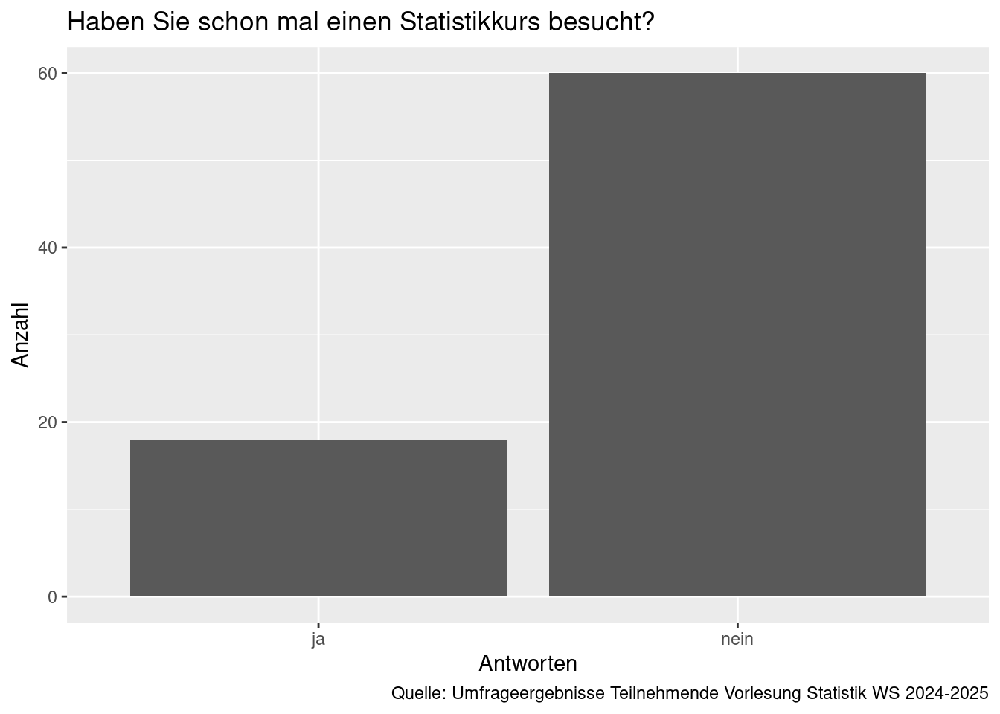

library(tidyverse)4 Daten in R einlesen und aus R speichern
- Daten aus Textdateien in R einlesen
- Die $-Notation
- Ansprechen eines Eintrags im
tibble - Daten als Textdateien aus R speichern
4.1 Daten aus Textdateien in R einlesen
Um Daten aus Textdateien (z.B. aus .csv, .txt, .dat) in R zu importieren (i.e. einzulesen) werden wir die Bibliothek readr aus tidyverse benutzen. Wir laden erst einmal tidyverse.
Wir gehen davon aus, dass die Daten im Ordner Daten gespeichert sind. Falls Ihre Daten an einem anderen Ort abgelegt sind, müssen Sie den Pfad beim Einlesen entsprechend anpassen.
Um die Daten zu laden, gibt es in der Bibliothek readr verschiedene Funktionen, die alle mit read_ beginnen. Die allgemeinste davon ist read_delim. Darin kann man explizit einstellen, mit welchem Zeichen (z. B. Komma, Strichpunkt etc.) die einzelnen Spalten in der zu importierenden Datei getrennt sind. In der Datei, die wir einlesen, ist das Trennungszeichen ;. Das müssen Sie aber bei jeder Datei, die Sie einlesen, nachsehen.
car_numbers <- read_delim(file = 'Daten/autos_2025-10-12.csv', delim = ';')Ein kurzer Blick auf den Datensatz, den Sie aus der ersten Sitzung der Vorlesung erkennen sollten üòÑ. Es sind die Daten zur Mobilit√§t in Europa aus eurostat. Die Daten beinhalten die Anzhal der ‚ÄúPersonenkraftwagen je 1 000 Einwohner‚Äù, online Datencode: ROAD_EQS_CARHAB.
car_numbersDas Ergebnis des Einlesens mit read_ Funktionen ist immer ein tibble.
4.2 Einzelne Variablen ansprechen
Jede Variable hat einen Namen. Man kann diesen nutzen, um die Variable anzusprechen. Z. B. könnten wir die Variable geo so ansprechen:
car_numbers$geo [1] "Albania" "Albania" "Austria"
[4] "Austria" "Belgium" "Belgium"
[7] "Bosnia and Herzegovina" "Bosnia and Herzegovina" "Bulgaria"
[10] "Bulgaria" "Croatia" "Croatia"
[13] "Cyprus" "Cyprus" "Czechia"
[16] "Czechia" "Denmark" "Denmark"
[19] "Estonia" "Estonia" "Finland"
[22] "Finland" "France" "France"
[25] "Georgia" "Georgia" "Germany"
[28] "Germany" "Greece" "Greece"
[31] "Hungary" "Hungary" "Iceland"
[34] "Iceland" "Ireland" "Ireland"
[37] "Italy" "Italy" "Kosovo*"
[40] "Kosovo*" "Latvia" "Latvia"
[43] "Liechtenstein" "Liechtenstein" "Lithuania"
[46] "Lithuania" "Luxembourg" "Luxembourg"
[49] "Malta" "Malta" "Moldova"
[52] "Moldova" "Montenegro" "Montenegro"
[55] "Netherlands" "Netherlands" "North Macedonia"
[58] "North Macedonia" "Norway" "Norway"
[61] "Poland" "Poland" "Portugal"
[64] "Portugal" "Romania" "Romania"
[67] "Serbia" "Serbia" "Slovakia"
[70] "Slovakia" "Slovenia" "Slovenia"
[73] "Spain" "Spain" "Sweden"
[76] "Sweden" "Switzerland" "Switzerland"
[79] "Türkiye" "Türkiye" "United Kingdom"
[82] "United Kingdom" Sie sehen, dass die Darstellung jetzt anders aussieht, weil eine einzelne Variable ein Vektor ist und kein tibble. Vektoren werden (durchnummeriert) ausgegeben und wir sehen alle 76 Einträge (Länder) nacheinander in der Reihenfolge ihres Erscheinens in der Variablen geo.
4.3 Ansprechen von Spalten, Zeilen und Zellen in einem tibble
Ein tibble ist ein zwei-dimensionales Objekt: Es hat Zeilen (erste Dimension) und Spalten (zweite Dimension). Um so ein Objekt richtig anzusprechen, erweitern wir unsere Notation mit den eckigen Klammern. Jetzt brauchen wir nämlich zwei Indizes: einen Index für die Zeile und einen Index für die Spalte eines Eintrags. Wenn wir z. B. den dritten Eintrag in der ersten Spalte (Variable geo) sehen wollen, schreiben wir:
car_numbers[3, 1]Es handelt sich um Österreich. Wir können auch ganze Spalten (Variablen) ansprechen. Dafür wird der erste Index (für Zeilen) weggelassen. Nichts (oder ein Leerzeichen) signalisieren R, dass alle Einträge gemeint sind. So können wir die erste Spalte wie folgt ansprechen:
car_numbers[, 1]Beim Ansprechen ganzer Zeilen ist es ähnlich. Wir lassen den Index für die Spalte weg. Um die erste Zeile anzusprechen, schreiben wir:
car_numbers[1,]Sie sollten einen wichtigen Unterschied zwischen der $-Notation und dem Ansprechen in eckigen Klammern bemerken: Die $-Notation gibt einen Vektor zurück. Wenn Sie ein tibble mit eckigen Klammern ansprechen, ist die Antwort ein tibble.
4.4 Ein tibble erstellen
Um ein tibble zu erstellen, nutzen wir die Funktion tibble() und zählen auf, welche Variablen wir dort haben möchten.
car_numbers_short <- tibble(Land = car_numbers$geo, Zeit = car_numbers$TIME_PERIOD)In dem Datensatz car_numbers_short haben wir jetzt die beiden Variablen geo und TIME_PERIOD aus dem Datensatz car_numbers als tibble abgespeichert.
4.5 Daten aus R speichern
Wir speichern dieses tibble als Textdatei. Dafür nutzen wir die Funktion write_delim(), die ebenfalls in der Bibliothek readr in tidyverse vorhanden ist. Achten Sie darauf, dass write_delim() nur tibble speichern kann. Wenn Sie einen Vektor (eine einzelne Variable) abspeichern möchten, dann wandeln Sie diesen zuerst in ein tibble um.
write_delim(x = car_numbers_short, file = 'Daten/geo.csv', delim = ';')4.6 Lesestoff
Kapitel 4.1 in Ismay and Kim (2021)
4.7 Hausaufgaben
4.7.1 Die Umfrage aus der Vorlesung
Lesen Sie die Datei ‘Datenerhebung_kurz_2025.csv’ ein (sie ist auf ILIAS zu finden). Sie enthält die Umfrageergebnisse aus der ersten Session der Vorlesung zur Frage ‘Haben Sie schon mal einen Statistikkurs besucht?’
- Wie viele Einträge enthält der Datensatz?
- Wie viele Variablen enthält der Datensatz?
- Sind die Variablen numerisch oder kategorial? Wurden die Variablen auch so von R eingelesen?
- Erklären Sie jede Variable. Welche Information enthält sie?
- Stellen Sie die Antworten auf die Frage als Balkendiagramm dar. Es soll wie unten dargestellt aussehen. Achtung, da der Variablenname Leer- und Sonderzeichen enthält, muss er zwischen Hochkommas angegeben werden:
mapping = aes(x = `Haben Sie schon mal einen Statistikkurs besucht?`)
- Wie viele Teilnehmende haben bereits einen Statistikkurs besucht (ungefähr)?
4.7.2 Ihre Arbeit einreichen
Reichen Sie die Aufgabe aus Kapitel 4.7 bei FelloFish ein und erhalten Sie Feedback: